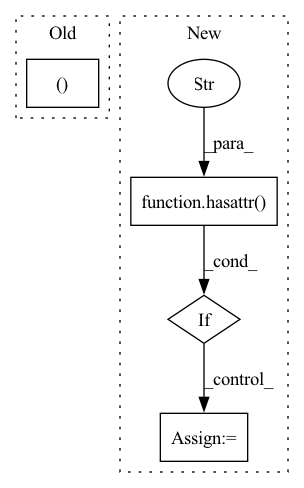

Pattern ID :27069
Before Change
for module in model.modules():
if hasattr(module, "stride"):
stride_so_far *= np.array(module.stride)
module.stride = (1, 1 )
if hasattr(module, "dilation"):
assert module.dilation == 1 or (module.dilation == (1,1)), (
"Dilation should equal 1 before conversion, maybe the model is "After Change
-------
if not hasattr( axis, "__len__" ) :
axis = [axis]
assert all([ax in [2,3] for ax in axis]), "Only 2 and 3 allowed for axis"
axis = np.array(axis) - 2
stride_so_far = np.array([1, 1])In pattern: SUPERPATTERN
Frequency: 5
Non-data size: 4
Instances Fragment ID: 80600172
Project Name: braindecode/braindecode
Commit Name: 270aa47bf790d37f0bc80ea67c31ef35c0fdd277
Time: 2017-07-04
Author: robintibor@gmail.com
File Name: braindecode/torch_ext/util.py
M Class Name: AnonimousClass
N Class Name: AnonimousClass
M Method Name: to_dense_prediction_model(2)
N Method Name: to_dense_prediction_model(1)
M Parent Class:
N Parent Class:
M File Name: braindecode/torch_ext/util.py
N File Name: braindecode/torch_ext/util.py
M Start Line: 23
M End Line: 33
N Start Line: 23
N End Line: 56
Before Change
// Access base leaf samples based on
rnge_out = torch.arange(self.in_features, device=samples.device)
tmp[sample_idx] = samples[sample_idx, rnge_out, paren_indices_in ]
samples = tmp
return samplesAfter Change
)
// Collect final samples in temporary tensor
if hasattr( self.base_leaf, "cardinality" ) :
cardinality = self.base_leaf.cardinality
else:
cardinality = 1
tmp = torch.zeros(
context.num_samples,
self.in_features, Fragment ID: 80600169
Project Name: braun-steven/simple-einet
Commit Name: e676164620436cbd5d671c995a02f45aabe2c440
Time: 2021-12-14
Author: steven.lang.mz@gmail.com
File Name: simple_einet/factorized_leaf_layer.py
M Class Name: FactorizedLeaf
N Class Name: FactorizedLeaf
M Method Name: sample(3)
N Method Name: sample(3)
M Parent Class: AbstractLayer
N Parent Class: AbstractLayer
M File Name: simple_einet/factorized_leaf_layer.py
N File Name: simple_einet/factorized_leaf_layer.py
M Start Line: 65
M End Line: 95
N Start Line: 65
N End Line: 120
Before Change
}
)
bsz, lr, decay, sch, n_ep, gas = (train_args_[model_name][model_size].get(k, None) for k in (
"batch_size", "learning_rate", "weight_decay",
"lr_scheduler_type", "num_train_epochs", "gradient_accumulation_steps"
))
args = dict(
output_dir=os.path.join(PATH_BASE, DIR_PROJ, DIR_MDL, model_name, now(for_path=True)),
do_train=True, do_eval=False,After Change
report_to="none",
// gradient_checkpointing=torch.cuda.is_available()
)
if not hasattr( get_train_args, "d_train_args" ) :
get_train_args.d_train_args = dict(
xl={
"debug": dict(
batch_size=4,
learning_rate=5e-4,
weight_decay=0,
lr_scheduler_type=SchedulerType.CONSTANT,
num_train_epochs=8,
),
"debug-large": dict(
batch_size=8, // To fit in colab
gradient_accumulation_steps=4,
learning_rate=5e-5,
weight_decay=0,
lr_scheduler_type=SchedulerType.CONSTANT,
num_train_epochs=3
),
"small": dict(
batch_size=32,
learning_rate=4e-5,
weight_decay=1e-2,
lr_scheduler_type=SchedulerType.COSINE,
num_train_epochs=32
)
},
reformer={
"debug": dict(
batch_size=4,
learning_rate=3e-4,
weight_decay=0,
lr_scheduler_type=SchedulerType.CONSTANT,
num_train_epochs=32,
),
"base": dict(
batch_size=128,
learning_rate=3e-5,
weight_decay=1e-2,
lr_scheduler_type=SchedulerType.COSINE,
num_train_epochs=32,
warmup_ratio=0.1
)
}
)
d_xl = get_train_args.d_train_args["xl"]
for k in d_xl.keys():
d_xl[k].update(dict(
// Doesn"t work per `TransfoXL.forward`: Fragment ID: 80600181
Project Name: stefanheng/symbolic-music-generation
Commit Name: fc3287a16e02198b7a1586d8f005a510a68bcc47
Time: 2022-03-30
Author: 43276957+SpongeBobBang@users.noreply.github.com
File Name: musicnlp/model/train.py
M Class Name: AnonimousClass
N Class Name: AnonimousClass
M Method Name: get_train_args(3)
N Method Name: get_train_args(3)
M Parent Class:
N Parent Class:
M File Name: musicnlp/model/train.py
N File Name: musicnlp/model/train.py
M Start Line: 71
M End Line: 144
N Start Line: 68
N End Line: 146
Before Change
Forward computations from the waveform batches to the output probabilities.
batch = batch.to(self.device)
wavs, wav_lens = batch.sig
tokens_bos, _ = batch.tokens_bos
wavs, wav_lens = wavs.to(self.device), wav_lens.to(self.device)
// Add augmentation if specifiedAfter Change
// Forward pass
// Handling SpeechBrain vs HuggingFance pretrained models
if hasattr( self.modules, "extractor" ) : // SpeechBrain pretrained model
latents = self.modules.extractor(wavs)
feats = self.modules.encoder_wrapper(latents, wav_lens=wav_lens)[
"embeddings"
]
else: // HuggingFace pretrained model
feats = self.modules.wav2vec2(wavs)
x = self.modules.enc(feats)
Fragment ID: 80600180
Project Name: speechbrain/speechbrain
Commit Name: 33919bd5e34c83a7a6e5cb853b2a56a6de878faf
Time: 2022-08-28
Author: parcollet.titouan@gmail.com
File Name: recipes/LibriSpeech/ASR/CTC/train_sb_wav2vec.py
M Class Name: ASR
N Class Name: ASR
M Method Name: compute_forward(3)
N Method Name: compute_forward(3)
M Parent Class: sb.Brain
N Parent Class: sb.Brain
M File Name: recipes/LibriSpeech/ASR/CTC/train_sb_wav2vec.py
N File Name: recipes/LibriSpeech/ASR/CTC/train_sb_wav2vec.py
M Start Line: 40
M End Line: 60
N Start Line: 54
N End Line: 62
Before Change
return loaded_state_dict
def warm_up(self, input_shape: Sequence[int], *args, **kwargs):
step_shape = (*input_shape[:2], *input_shape[3:] )
return self.module.warm_up(step_shape)
After Change
def warm_up(self, input_shape: Sequence[int], *args, **kwargs):
for m in self.modules.modules():
if hasattr( m, "state_index" ) :
m.state_index = 0
if __name__ == "__main__": Fragment ID: 80600177
Project Name: lukashedegaard/co3d
Commit Name: 43c5e2ada5a070ff044ee32ef05b46e5a3e992c7
Time: 2021-09-22
Author: lh@eng.au.dk
File Name: models/cox3d/main.py
M Class Name: CoX3DRide
N Class Name: CoX3DRide
M Method Name: warm_up(2)
N Method Name: warm_up(2)
M Parent Class: ActionRecognitionDatasets,TopKAccuracyMetric(1, 3, 5),RideModule,SgdCyclicLrOptimizer
N Parent Class: ActionRecognitionDatasets,TopKAccuracyMetric(1, 3, 5),RideModule,SgdCyclicLrOptimizer
M File Name: models/cox3d/main.py
N File Name: models/cox3d/main.py
M Start Line: 274
M End Line: 275
N Start Line: 274
N End Line: 278